발길 — 사회적 고립 조기발견 에이전트
카드 결제와 유동인구로 어르신의 '발길'을 매주 재서, 발길이 끊긴 곳에 먼저 안부를 묻게 하는 에이전트

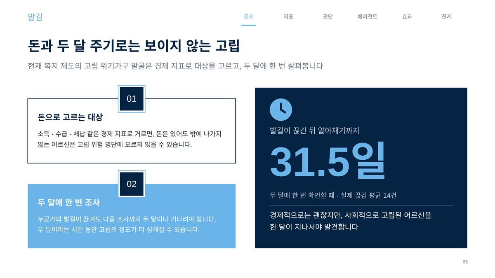
문제 🤔
먼저 정한 것은 하지 않을 일이었습니다. SK텔레콤 유동인구와 신한카드 결제에는 개인 식별자가 없습니다. 같은 사람의 결제를 이어 붙일 수도, 이동을 따라갈 수도 없습니다. 그러니 "고립 위험 개인을 AI가 찾아낸다"는 이 데이터로는 지어낼 수 없는 이야기입니다. 할 수 있는 것은 공간(50m 격자 · 행정동)과 코호트(시군구 × 업종 × 성 × 연령)의 신호를 읽는 일이고, 진짜 문제는 그 다음입니다 — 집계 신호를 어떻게 사람에게 닿는 행동으로 바꿀 것인가.
접근 🛠
- 고립을 '발길이 좁아지고 끊기는 일'로 정의하고 네 지표로 나눠 쟀습니다 — 양(얼마나 여러 곳에), 질(아는 얼굴이 있는 곳에), 연속성(평소처럼 나오고 있나), 터전(동네에 갈 곳이 있나).
- 양은 업종별 결제 몫의 역허핀달
1 ÷ Σpᵢ²로 쟀습니다. 네 업종에 고르게 쓰면 4.0곳, 한 곳에 몰리면 사실상 1.06곳으로 떨어집니다. - 질은 커피전문점 · 미용실 · 목욕탕처럼 오래 머무는 업종 11개의 결제 비중으로 쟀습니다. 80대의 체류 비중은 50대의
0.37~0.58배였고, 이 순서는 6개월 12칸 전부에서 유지됐습니다. - 연속성은
log(지난 7일 ÷ 평소) − 같은 도시 30·40대의 같은 값으로 쟀습니다. 평소 흔들림의 3배 넘게 줄면 끊긴 날로 봅니다. - 터전은 어르신 천 명당 머물 가게 수를 동 단위로 셌습니다. 동끼리 강남 170배 · 춘천 44배까지 벌어졌고, 춘천은 가게가 적은 동일수록 경로당이 많았습니다(
ρ = −0.79). 강남은 관계가 없어(0.03) 도시마다 다른 처방이 필요했습니다. - 판정은 LLM 없이 규칙과 계산만으로 했습니다. 에이전트는 먼저 연락할 3명과 안부를 물을 곳을 고르기만 하고, 전화 · 방문은 담당자가 정합니다. 확인 결과(
log_outcome)는 다음 주 판단에 반영됩니다. - 관제 화면 4종을 만들었습니다 — 주간 브리핑 · 발길 상세 · 터전 지도 · 보정 전·후.
결과 📈
허위 알림을 131 → 44건으로 줄였고 명절 주간은 105 → 26으로 75% 감소했습니다. 다음 주에 발길이 좁아질 집단을 랜덤포레스트로 예측해 31건 중 18건을 한 주 먼저 잡았고(AUC 0.973, 기준선은 0/31 · 0.887), 그 대가로 경보가 175건에서 202건으로 늘어나는 것도 함께 적었습니다. 확인 주기를 두 달에서 매주로 바꾸는 것만으로 끊김을 평균 28.5일 먼저 알아챌 수 있고, 같은 수의 동을 돌아도 1.4~1.8배 많은 어르신께 닿습니다.
금융 직무와의 연결 🎯
- 여신 · 심사 — 개인이 아니라 코호트 단위로 이상 신호를 잡고 등급을 나눠 조치를 연결하는 구조입니다. 포트폴리오 단위 조기경보가 정확히 이 형태입니다.
- 이상탐지 · 보안 — 명절 · 큰비처럼 모두가 함께 움직인 날을 공통 충격으로 걷어내 허위 경보를
131 → 44건으로 줄였습니다. FDS 룰에서 시장 전체 이벤트를 제거하는 작업과 같은 사고입니다. - 리서치 · 투자 — 이번 주 순위를 그대로 쓰는 기준선이 새로 나빠지는 집단을 0건 잡는다는 것을 보이고, 선행 피처로 바꿔 18/31을 한 주 먼저 잡았습니다. 백테스팅에서 기준선을 먼저 세우는 절차 그 자체입니다.
기술 선택과 판단 근거 🧭
왜 그 방법을 택했는지, 무엇을 택하지 않았는지 적었습니다.
개인을 찾지 않기로 먼저 못 박았다
두 데이터 모두 집계라서 개인 탐지는 불가능합니다. 그걸 발표 앞쪽에 먼저 쓰고 '동 단위 선제 점검 트리거'로 정직하게 포지셔닝했습니다. 개인 탐지로 포장하면 질의에서 가장 먼저 무너지는 지점이라고 봤습니다.
계절만 보정했더니 알림이 오히려 늘었다 — 그래서 한 겹 더 뺐다
6개월 평균 대신 앞뒤 4주 같은 요일과 견주는 계절 보정을 넣자 알림이 131 → 150으로 늘었습니다. 추석 · 큰비처럼 모두가 덜 나간 날이 그대로 남은 탓이었습니다. 같은 도시 30·40대가 함께 줄어든 만큼을 빼고 나서야 44로 떨어졌습니다. 보정은 한 겹으로 끝나지 않는다는 걸 숫자로 확인한 자리였습니다.
밥집을 '질' 지표에서 뺐다
80대가 식당에 자주 가는 것이 친구를 만나서인지 밥 하기 힘들어서인지 카드 데이터로는 가릴 수 없습니다. 가를 수 없는 것은 지표에 넣지 않았습니다.
더 자세히
관심 있는 항목만 펼쳐 보세요.
이 프로젝트가 시작된 배경
복지 제도의 고립 위기가구 발굴은 소득 · 수급 · 체납 같은 경제 지표로 대상을 고르고, 두 달에 한 번 살펴봅니다. 그래서 돈은 있어도 밖에 나가지 않는 어르신은 명단에 오르지 않습니다. 실제 끊김 14건을 기준으로 재보니, 발길이 끊긴 뒤 알아채기까지 평균 31.5일이 걸렸습니다. 경제적으로는 괜찮지만 사회적으로 고립된 어르신을 한 달이 지나서야 발견하는 구조입니다.
기술 판단 더 보기 2
건수가 아니라 비중으로 봤다
60대 이상은 현금을 더 쓰기 때문에 카드에 잡히는 수가 실제 인구의 0.51~0.64배뿐입니다. 절대 건수로 보면 어르신이 원래 덜 활동하는 것처럼 보입니다. 같은 도시 · 같은 성별 50대와의 비중 비교로 바꿔 이 왜곡을 피했습니다.
판정을 LLM에 맡기지 않았다
복지 담당자가 쓰는 판단이라 LLM 없이 재현 가능한 수치로 남겨야 한다고 봤습니다. 에이전트는 순서를 정하고 근거를 붙이는 데까지만 하고, 사람에게 닿는 행동은 담당자가 결정합니다.
막혔던 지점과 해결 과정 4
보고서 열한 편의 숫자를 손으로 맞추다 포기하고 도구를 만들었다
협업 규칙은 "숫자는 최종 수치표에서만 가져온다"였습니다. 그런데 문서가 열한 편에 발표자료까지 있어서 손으로 훑으면 반드시 빠뜨렸습니다. 그래서 수치표에 없는 숫자를 찾아내는 대조 도구를 만들어 전수 대조했습니다. 그런데 문제가 남았습니다 — 글자만 맞으면 통과한다는 것이었습니다. 개포1동의 '7~8곳'이 수치표의 '춘천 7~8곳'에 걸려 통과했고, 끊김 판정의 '3배'가 창구 배수 '3배'에 걸렸습니다. 그래서 숫자마다 문서의 앞뒤 글과 수치표에서 걸린 줄의 앞뒤 글을 나란히 찍어 사람이 같은 뜻인지 읽게 하는 2차 도구를 따로 만들었습니다.
전수 대조에서 '오류 0개'라고 적었다가 철회했다
수치표 전수 대조를 끝내고 결과를 '어긋난 값 0개'로 적었습니다. 그런데 2차 도구로 같은 구간을 다시 보니 글자만 맞고 뜻이 다른 건이 남아 있었습니다. 이미 공유한 '0개' 선언을 먼저 철회하고 다시 셌습니다. 선언을 유지한 채 조용히 고치는 쪽이 편했지만, 그러면 다음에 제가 '0개'라고 할 때 아무도 믿지 않게 됩니다.
보정을 넣었는데 알림이 늘어난 날
계절 보정이 당연히 알림을 줄일 거라 생각했는데 131에서 150으로 늘었습니다. 원인을 보니 추석 · 광복절 · 성탄 뒤 7일처럼 모두가 함께 덜 나가는 날이 그대로 남아 있었습니다. 한 사람의 고립이 아니라 도시 전체의 휴일을 잡고 있었던 겁니다. 같은 도시 30·40대의 같은 종류 발길 변화를 빼자 그제야 44로 떨어졌습니다.
이번 주 순위를 그대로 쓰는 기준선은 새로 좁아지는 집단을 한 건도 못 잡았다
"지금 발길이 좁은 집단을 그대로 다음 주 후보로 쓰면 되지 않나"가 첫 기준선이었습니다. AUC는 0.887로 그럴듯했는데, 정작 새로 좁아지는 31건 중 0건을 잡았습니다. 이미 좁은 집단만 계속 다시 불러내고 있었던 겁니다. 3주 이동평균과 이번 주 좁아짐을 넣은 모델로 바꾸자 18건을 한 주 먼저 잡았습니다.
데이터
화면 · 시각화 더 보기 10
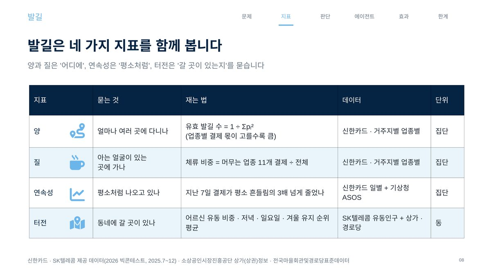
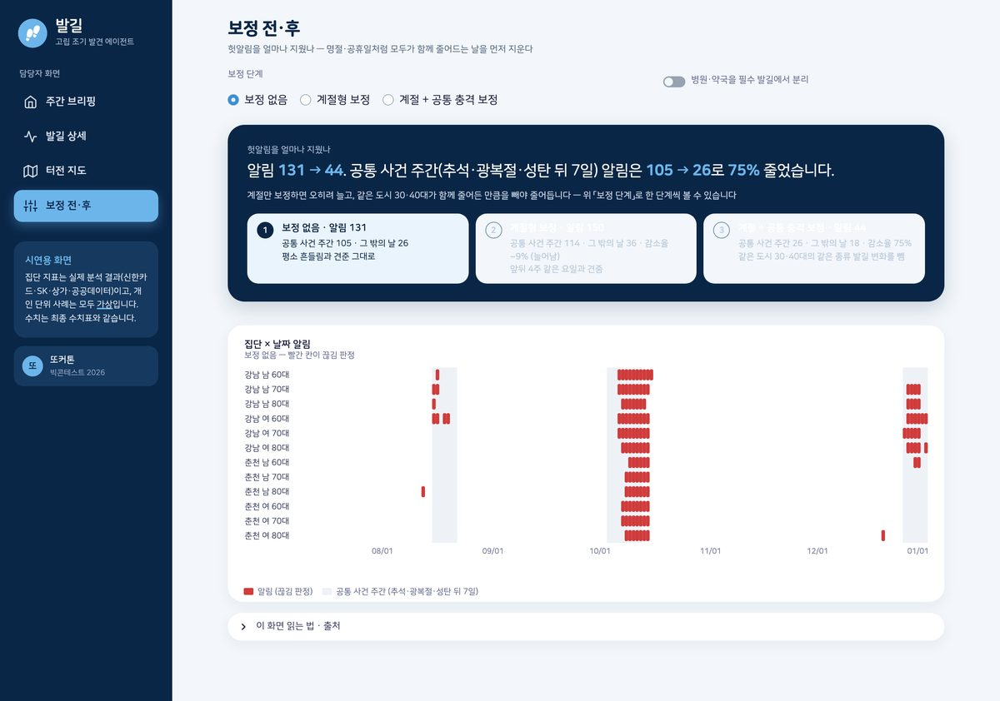
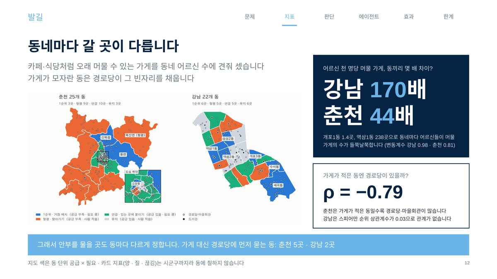
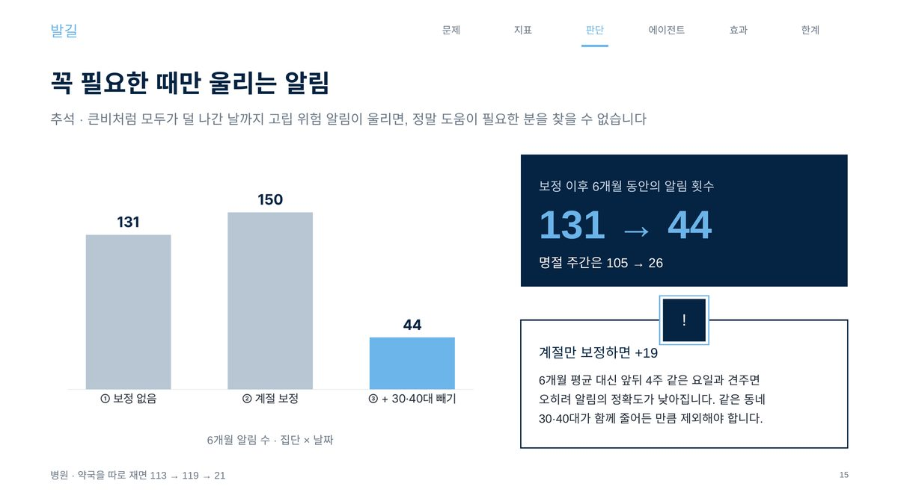
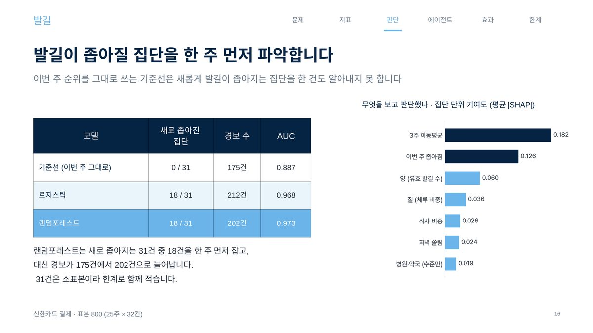
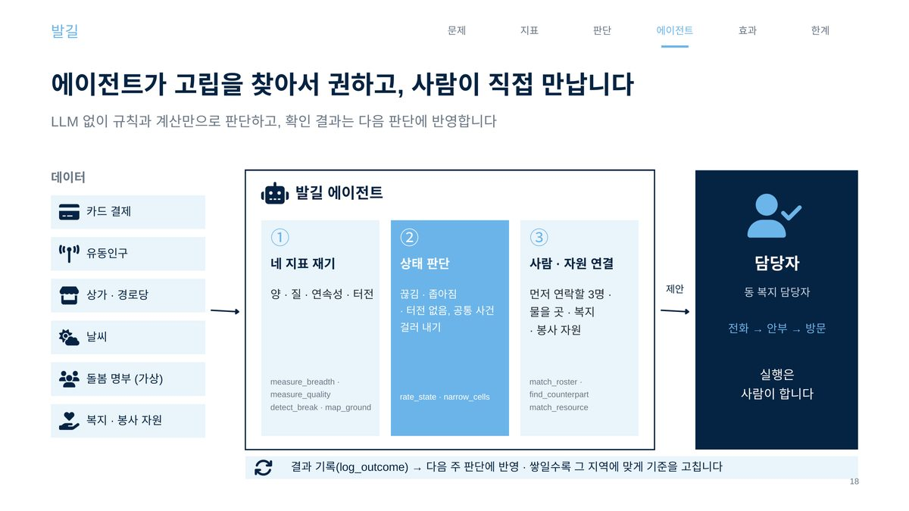
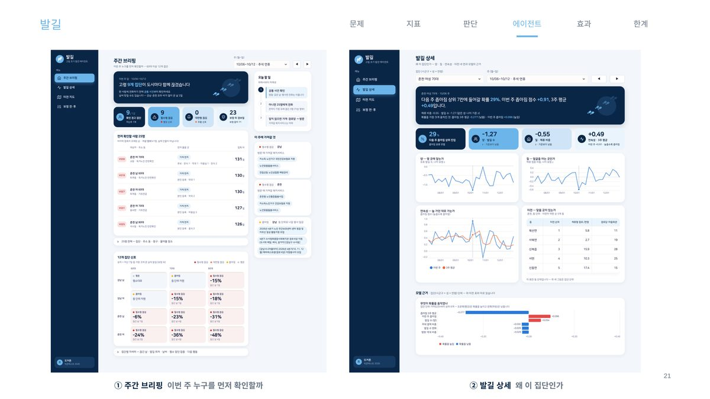
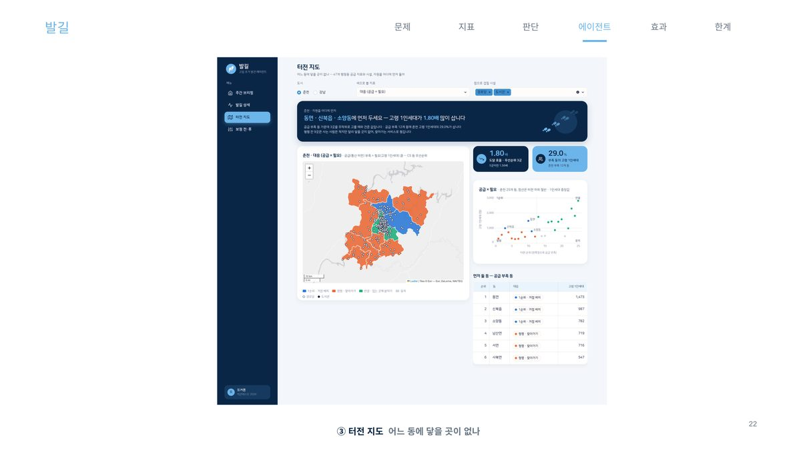
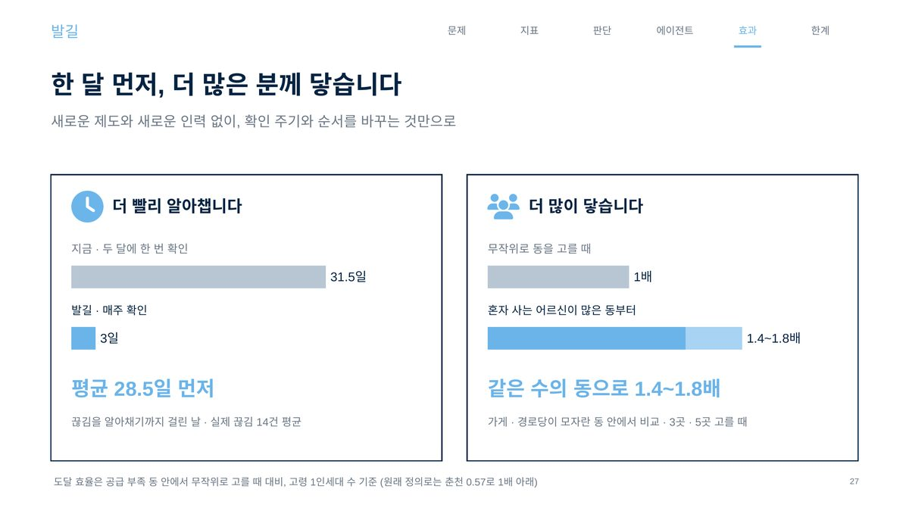
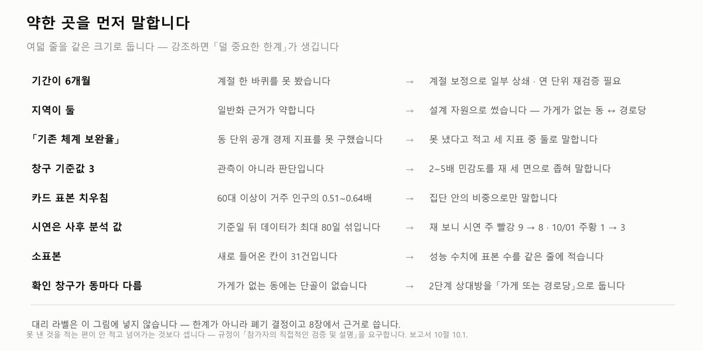
이 결과가 틀렸을 수 있는 지점
- 자료가 6개월(7~12월), 도시가 두 곳뿐이라 봄 · 여름 패턴은 확인하지 못했습니다. 1년치로 사계절을 다시 볼 계획입니다.
- 현금을 더 쓰는 분들이 빠져 카드에 잡히는 60대 이상은 실제 인구의 절반 남짓입니다. 비중 비교로 완화했을 뿐 해결한 것은 아닙니다.
- "평소보다 3배", "지난 7일", "하위 20%" 같은 기준은 데이터 근거 없이 임의로 정한 값입니다. 기준을 조금씩 바꿔도 결과가 비슷한지 확인해야 합니다.
- 기존 위기가구 발굴이 놓친 분을 몇 % 더 찾는지는 아직 측정하지 못했습니다. 이 프로젝트의 핵심 주장인데 그 숫자가 비어 있습니다.
- 선행 예측 표본이 31건으로 적습니다. 발표 자료에 소표본임을 함께 적었습니다.
- 시연 값은 6개월 자료로 돌린 사후 분석이고, 사람은 모두 가상 명부(41명)입니다.
회고
가장 오래 기억에 남는 건 보정을 넣었는데 숫자가 반대로 움직인 순간이었습니다. 계절 보정이 당연히 알림을 줄일 줄 알았는데 늘었고, 그 이유를 쫓아가다가 "내가 재려는 게 한 집단의 고립인지 도시 전체의 휴일인지"를 구분하지 못하고 있었다는 걸 알았습니다. 그리고 데이터가 할 수 없는 일을 먼저 못 박고 시작한 것이 설계를 더 쉽게 만들었습니다 — 개인을 못 찾는다고 인정하고 나니, 그럼 집계 신호를 어떻게 사람에게 닿게 할 것인가라는 진짜 문제가 남았습니다.